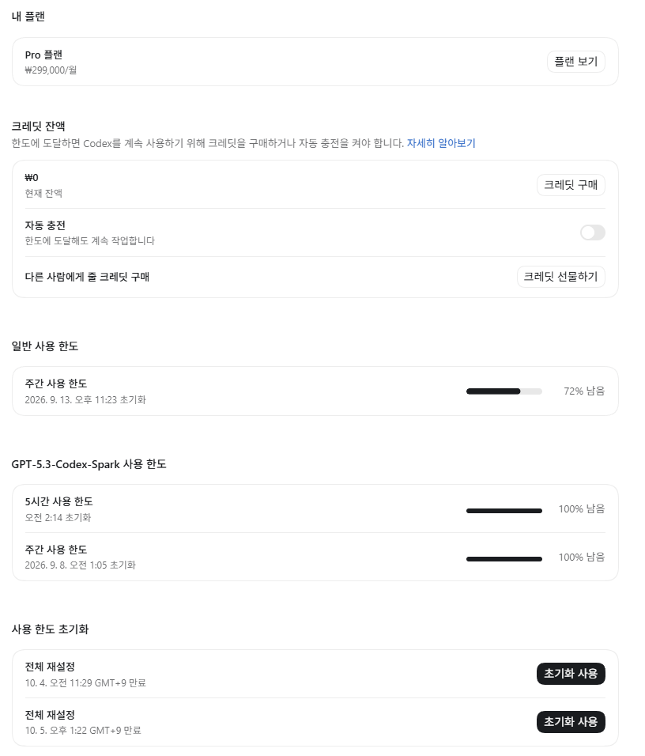

직원 4명대리고 작은 회사 운영하면서
코인으로 단타치면서 용돈벌이하면서 먹고사는 개붕이임
주말내내 아스트라 사용하면서 시간가는줄 모르고 하루에 1판은하던 롤도안하고 아스트라돌려보는게 너무재밌어서
잠도 줄이면서 가지고논 후기임
얼마나 사용했냐면

2일동안 초기화권 2개나 사용함 ㅋㅋ 남은 2개는 아스트라 늦게나온다고 gpt에서 공짜로 주더라고?
원래 초기화권 못써서 쌓여만 있는 상태였음
원래 버그는 페이블 5.1로 수정하고
일반작업은 gpt sol위주로 진행을했음
원래 클로드쪽이 좀더좋지만 사용량관리한다고 sol을 사용했는데
이번에 아스트라나오면서 사실이제 클로드껄 사용할 이유가있나? 의구심이듬
원래 sol로 작업을진행하면
- 작업지시 -> 작업한걸 상세보고 지시 -> 문제가 생길만한곳을 재확인 -> 버그수정 이런식이였는데
아스트라로 바꾸면서
약간 진짜로 약간 AGI가 생겼는지
내가 생각하지못한 부분까지 이야기를해주고 허락을 받으면 수정하는 수준에도달함
즉 직원한테 시킨다는 느낌을 처음으로 받기시작함
그러다보니 너무재밌어서 기존에 작업하던 작업물들 다시검증해보고 문제가있는지 확인해보고
이것저것해본다고 3일정도 진짜 게임하듯이 재밌게했음
근데 확실히 아스트라로 사용하니깐 사용량이 체감 3~5배는 들어가는느낌임
줄어드는게 눈에 보임 빨리 보고싶어서 버그수정부분에서 울트라 + 가속모드 한번썼다가 사용량이 30%가 줄어드는 기적을보고
가속모드는 손도안댐 ㅋㅋ
근데 sol이 가성비라서 혁명이라면
아스트라는 페이블5.1이랑 비비거나 뛰어나서 굳이 이제 클로드꺼를 사용할 필요가있나? 이런느낌이드는정도임
이시발 페이블 5.1은 왜 사용량의 절반밖에 못쓰냐고 안그래도 쥐좆만한 사용량이면서 ㅡㅡ
정리를하자면
1. 5.6 sol이 기계를 돌리는 느낌이라면 아스트라는 직원한테 업무 지시하고 피드백 받는느낌임
2. 성능이 혁명수준맞고 한번 맛보면 Sol로 돌아갈수가없음
3. 대신 사용량 감소가 3~5배증가함 그래도 사실할만함
4. 클로드는 이제 안쓸꺼같음 아스트라면 떡을치고남음 사실 페이블 5.1이랑 비슷비슷한데 사용량에서 넘사벽임
5. 엔트로픽은 사용량가지고 장난질좀하지말자 ㅡㅡ 너희 좆됐어
#클로드는 플랜에따라 사용량가지고 장난질침 5배 20배가 실제로 사용량 배수가아님
6. 결정적으로 직원 1명 자를까 고민하는 수준이됨 안그래도 좀 마음에 안드는직원있었는데 업무효율떄문에 냅뒀는데
아스트라로 넘어오면서 업무 효율증가 할꺼생각하면 굳이 대리고 있어야하나? 생각이 들기시작함
제미나이 vs 지피티 vs 클로드
이젠 지피티가 셋중에 젤 좋음?